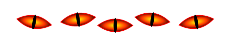
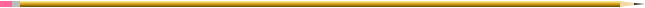
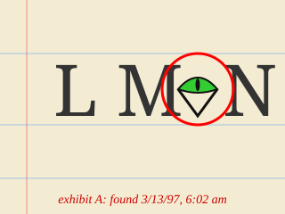
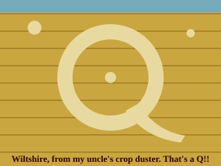
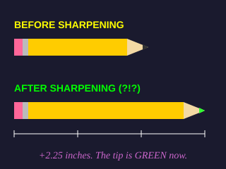
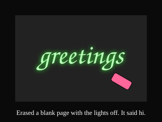
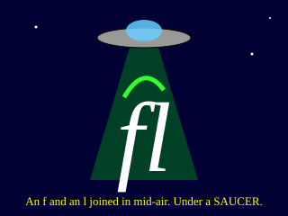
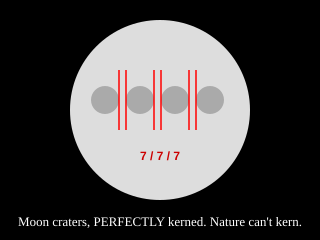

Typographic Anomalies

Skeptics, sit down. Below are six pieces of evidence that I have collected with my own two eyes (and a borrowed camera). Each one is 100% real and definitely proof of alien life. No human could kern this well. Click any picture to see it BIG.
WARNING: Do not stare at Exhibit A for more than 30 seconds.
 Exhibit A: The 27th Letter Appeared on my practice sheet overnight, between M and N. It blinked. I am almost sure it blinked. |
 Exhibit B: The Wiltshire Q A crop circle with a TAIL. Bracketed, tapered, Old Style. Farmers do not know what a bracketed serif is. |
 Exhibit C: The Growing Pencil Went into the sharpener. Came out longer. Writes in a green that is not on any crayon box I own. |
 Exhibit D: The Eraser Message I erased a BLANK page in the dark and it left glowing script behind. Lovely letterforms, honestly. |
 Exhibit E: The Beamed Ligature Saw this over the Kmart parking lot. Two loose letters went up, one ligature came down. |
 Exhibit F: Moon Kerning Measured through my telescope with a ruler taped to the lens. Same gap every time. Explain THAT, NASA. |
Got an anomaly of your own? Write it down (neatly!!) and send it to the Mothership. The best ones go up here with your name on them.
www.geocities.com/Area51/Meteor/2178/gallery.html
No anomalies were faked in the making of this page. That we know of.